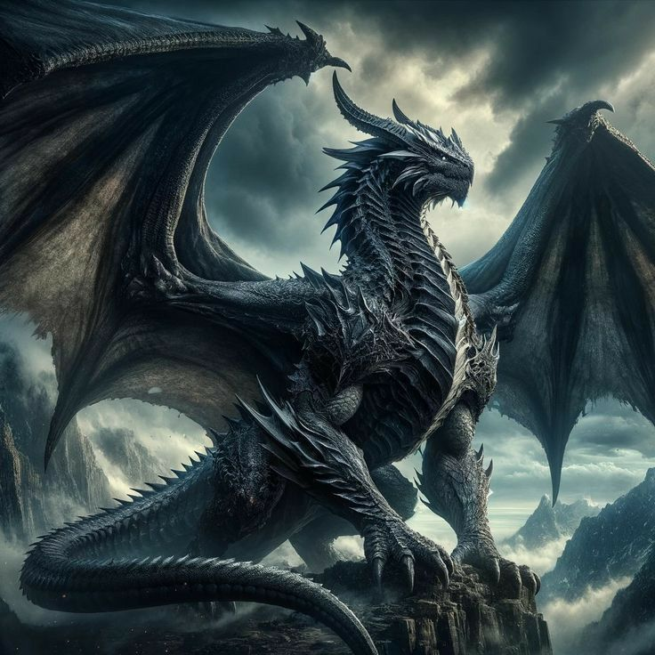

Dragones
Historía
Drákon, del griego, se transformó en Draco, del latín, hasta ser Dragón, en español, y Dragon en muchas lenguas más… Es una de las criaturas más fabulosas y enigmáticas salidas de la mente humana que mezclan en su cuerpo y acción lo terrenal con lo sobrenatural, un cuerpo hecho de diferentes animales que despierta tantos miedos como esperanzas, que desatan tantos simpatizantes como detractores, y de los que más incentivan la imaginación y la fantasía. El dragón es un ser omnipresente en diferentes culturas y épocas que ha sobrevivido a todas las generaciones en la Tierra, hasta tener una gran presencia en estas últimas décadas y vivir un momento de esplendor a través de la literatura que aliada con el cine, la televisión, el mundo virtual y los videojuegos alcanza una potencia y presencia inéditas.
Historias con tramas situadas en épocas medievales, donde la lucha del bien y el mal en lo personal, social, sentimental y político es un tornado incesante. La presencia del dragón, los dragones, son un reclamo indiscutible. Simbolizan el poder y la derrota, la creación y la destrucción, la astucia y la fuerza, el mal y, a veecs, el bien… engendran la duda por saber de qué lado están. Su presencia otorga el carácter épico y legendario que tanto gusta al ser humano, y que a los adultos lo retrotrae al placer y aventuras de épocas fantasiosas. Historias que realmente los traslada a un tiempo y espacio fuera de este mundo, pero que hunde sus garras en él.